import os
import urllib.request
import os.path
import gzip
import pickle
import os
import numpy as np
url_base = 'https://ossci-datasets.s3.amazonaws.com/mnist/' # mirror site
key_file = {
'train_img':'train-images-idx3-ubyte.gz',
'train_label':'train-labels-idx1-ubyte.gz',
'test_img':'t10k-images-idx3-ubyte.gz',
'test_label':'t10k-labels-idx1-ubyte.gz'
}
dataset_dir = f"./dataset"
save_file = dataset_dir + "/mnist.pkl"
train_num = 60000
test_num = 10000
img_dim = (1, 28, 28)
img_size = 784
def _download(file_name):
file_path = dataset_dir + "/" + file_name
if os.path.exists(file_path):
return
print("Downloading " + file_name + " ... ")
urllib.request.urlretrieve(url_base + file_name, file_path)
print("Done")
def download_mnist():
for v in key_file.values():
_download(v)
def _load_label(file_name):
file_path = dataset_dir + "/" + file_name
print("Converting " + file_name + " to NumPy Array ...")
with gzip.open(file_path, 'rb') as f:
labels = np.frombuffer(f.read(), np.uint8, offset=8)
print("Done")
return labels
def _load_img(file_name):
file_path = dataset_dir + "/" + file_name
print("Converting " + file_name + " to NumPy Array ...")
with gzip.open(file_path, 'rb') as f:
data = np.frombuffer(f.read(), np.uint8, offset=16)
data = data.reshape(-1, img_size)
print("Done")
return data
def _convert_numpy():
dataset = {}
dataset['train_img'] = _load_img(key_file['train_img'])
dataset['train_label'] = _load_label(key_file['train_label'])
dataset['test_img'] = _load_img(key_file['test_img'])
dataset['test_label'] = _load_label(key_file['test_label'])
return dataset
def init_mnist():
download_mnist()
dataset = _convert_numpy()
print("Creating pickle file ...")
with open(save_file, 'wb') as f:
pickle.dump(dataset, f, -1)
print("Done!")
def _change_one_hot_label(X):
T = np.zeros((X.size, 10))
for idx, row in enumerate(T):
row[X[idx]] = 1
return T
def load_mnist(normalize=True, flatten=True, one_hot_label=False):
"""读入MNIST数据集
Parameters
----------
normalize : 将图像的像素值正规化为0.0~1.0
one_hot_label :
one_hot_label为True的情况下，标签作为one-hot数组返回
one-hot数组是指[0,0,1,0,0,0,0,0,0,0]这样的数组
flatten : 是否将图像展开为一维数组
Returns
-------
(训练图像, 训练标签), (测试图像, 测试标签)
"""
if not os.path.exists(save_file):
init_mnist()
with open(save_file, 'rb') as f:
dataset = pickle.load(f)
if normalize:
for key in ('train_img', 'test_img'):
dataset[key] = dataset[key].astype(np.float32)
dataset[key] /= 255.0
if one_hot_label:
dataset['train_label'] = _change_one_hot_label(dataset['train_label'])
dataset['test_label'] = _change_one_hot_label(dataset['test_label'])
if not flatten:
for key in ('train_img', 'test_img'):
dataset[key] = dataset[key].reshape(-1, 1, 28, 28)
return (dataset['train_img'], dataset['train_label']), (dataset['test_img'], dataset['test_label']) 1 深度学习入门-卷积神经网络（CNN）
本文围绕从零开始实现一个卷积神经网络（CNN）来进行手写数字识别的任务。 ## 1. 数据集准备 这里使用 Mnist 数据集，它包含了 60000 张训练图片和 10000 张测试图片，每张图片都是 28x28 像素的灰度图像。使用现成的 load_mnist 代码加载数据集。
1.1 2. 神经网络层的实现
在本节中，我们将实现卷积层、池化层和全连接层。每个层都将包含前向传播和反向传播的实现。
1.1.1 2.1 卷积层
在全连接层（Affine层）中，需要将输入数据拉平为1维数据。图像是3维形状，应该含有重要的空间信息，因为全连接层会忽略形状，将全部的输入数据作为相同的神经元处理，所以无法利用形状相关的信息。而卷积层可以保持形状不变，当输入数据是图像时，卷积层会以3维数据的形式接收输入数据，并同样以3维数据的形式输出至下一层。
1.1.1.1 2.1.1 卷积运算
卷积运算相当于图像处理的“滤波器运算”。
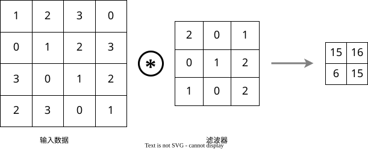
如图1所示，卷积运算对输入数据应用滤波器。在这个例子中，输入大小是(4, 4)，滤波器大小是(3, 3)，步长为1，填充为0。输出大小为(2, )。如图2所示，在这个过程中，滤波器在输入数据上滑动，将对应位置元素相乘，然后再求和（有时将这个计算称为乘积累加运算），生成输出数据。
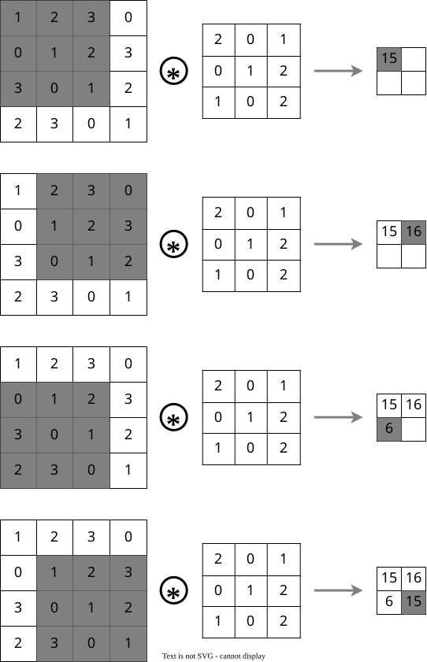
CNN中，滤波器的参数就对应之前的权重，并且，CNN中也存在偏置。包含偏执的卷积运算的处理流如图3所示。
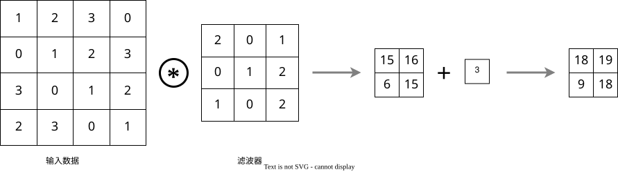
偏执通常只有1个值，应用于每个输出数据。
1.1.1.2 2.1.2 填充
填充（Padding）是指在输入数据的边缘添加额外的像素，以控制输出数据的大小。填充可以防止卷积操作导致输出数据尺寸过小。
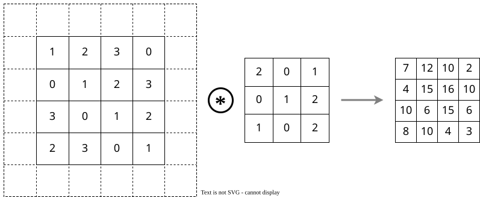
如图4所示，通过填充，大小为(4, 4)的输入数据变成了(6, 6)，滤波器大小为(3, 3)，步长为1，填充为1。输出大小变成了(4, 4)。
1.1.1.3 2.1.3 步长
步长（Stride）是指滤波器在输入数据上滑动的步幅。步长可以控制输出数据的大小。
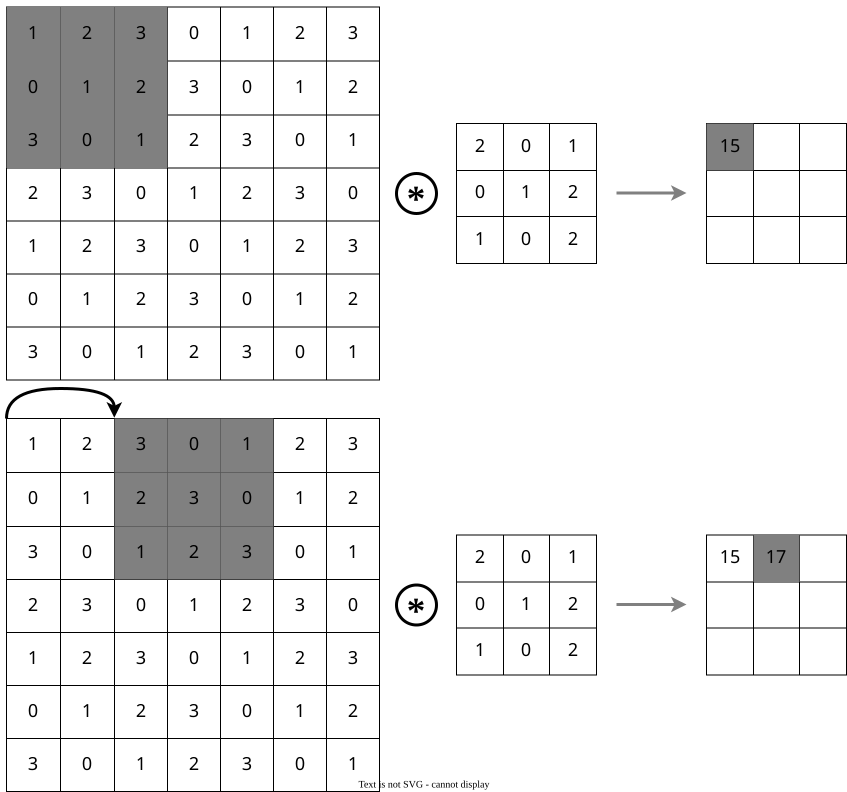
如图5所示，步长为2时，输入数据大小为(4, 4)，滤波器大小为(3, 3)，填充为0，输出大小变成了(2, 2)。
综上，可以用填充和步幅控制输出的大小，假设输入大小为(H, W)，滤波器大小为(FH, FW)，输出大小为(OH, OW)，填充为P，步长为S，则输出大小为： \begin{aligned} OH &= \frac{H + 2P - FH}{S} + 1 \\ OW &= \frac{W + 2P - FW}{S} + 1 \end{aligned}
注意，如果输出大小不是整数，则需要采取报错等对策。根据框架的不同，有时会使用向下取整的方式来处理。
1.1.1.4 2.1.4 3维数据的卷积
之前的卷积运算的例子都是以高、长两个方向的2维形状为对象，但是，图象是三维数据，除了高、长两个方向外，还需要处理通道方向。图6是3维卷积运算的例子，他在纵深方向上有三个通道，对应的滤波器也增加到了三个。运算时，按通道进行输入数据和滤波器的卷积运算，并将结果相加，从而得到2维的输出。
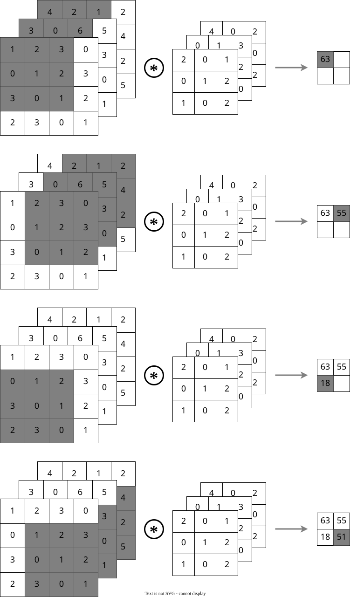
需要注意的是，滤波器的通道数只能设定为和输入数据的通道数相同的值。
1.1.1.5 2.1.5 结合方块思考
将数据和滤波器结合长方体的方块来考虑，可以更好地理解卷积运算。图7展示了一个3维数据的卷积运算，其中输入数据和滤波器都被视为方块。
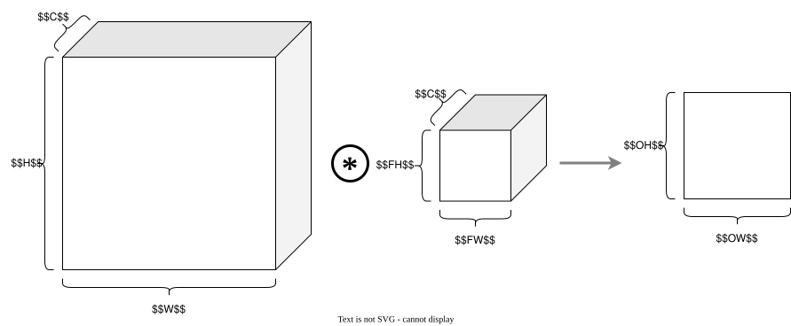
在这个例子中，数据输出是1张特征图，也就是通道数为1的特征图，如果要在通道方向上增加特征图的数量，可以使用多个滤波器进行卷积运算。图8展示了一个3维数据的卷积运算，其中输入数据和滤波器都被视为方块，输出了多个特征图，并且追加了偏置项。
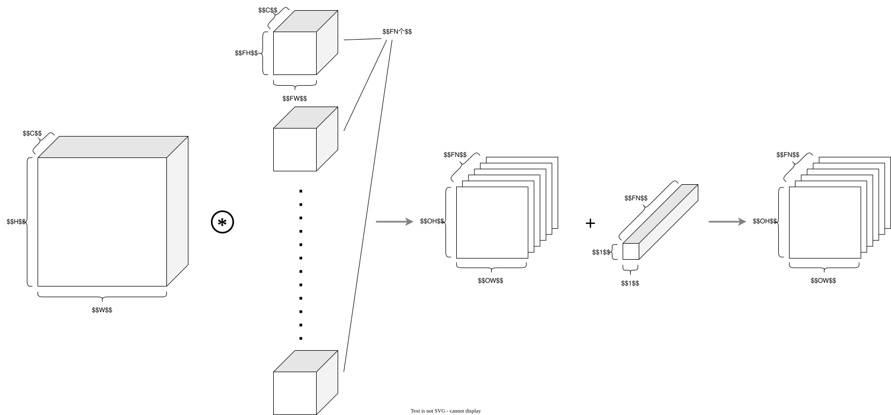
之前的处理还只是处理一张图片，如果进行将输入数据打包的批处理，则需要将各层间传递的数据保存为4维数据，具体就是按照 (batch_num, channel, height, weight) 的顺序存放数据。图9展示了一个批处理的卷积运算，其中输入数据和滤波器都被视为方块，输出了多个特征图。批处理将N次数据汇总为1次进行。
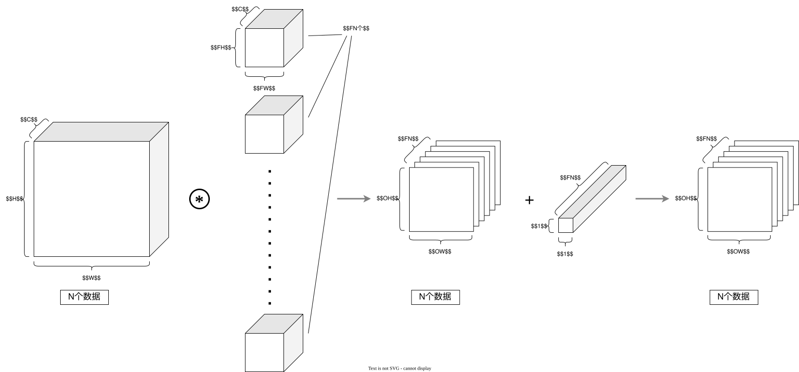
1.1.1.6 2.1.6 卷积层的实现
前面讲到CNN中各层传递的数据是一个4维数据，为了更高效的处理数据，会用到 im2col 和 col2im 函数。im2col 函数将输入数据转换为列向量的形式，col2im 函数则将列向量转换回原来的形状。
假设有一个输入是 (1, 3, 9, 9)，滤波器是 (1, 3, 3, 3)，步长为3，填充为0。通过计算得出 out_h=3，out_w=3。其输入转换成col数组的运算过程如图10所示。
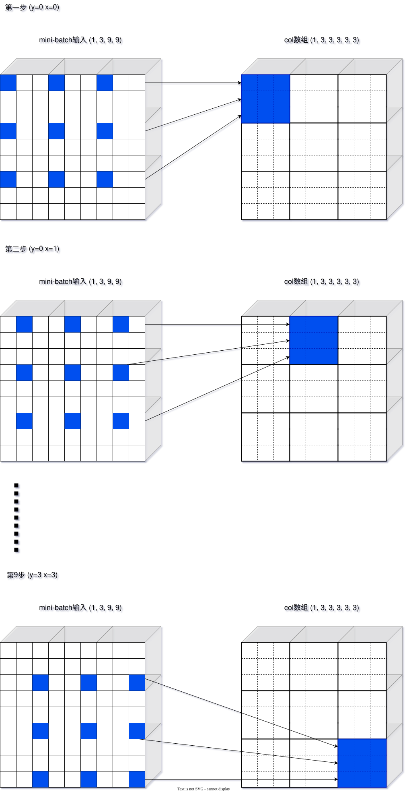
右侧是一个新的五维数组，将它在九宫格中对应编号位置的元素组合在一起，就是原来四维数组的一个卷积运算单元，使用col = col.transpose(0, 4, 5, 1, 2, 3).reshape(N*out_h*out_w, -1)将其展开成二维数组。
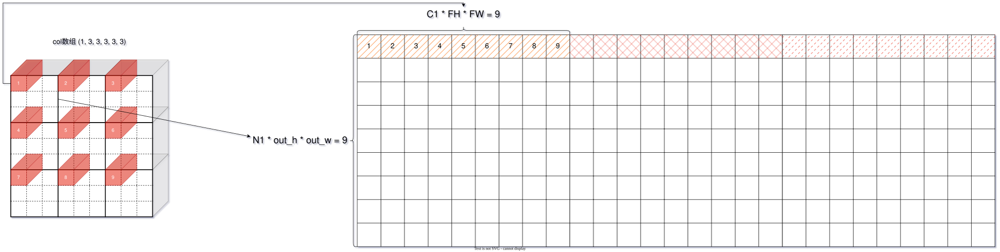
图11中，二维数组的一行就是对应于的一个卷积运算单元。同理，col2im的过程就是im2col的逆过程，这里不再解释，python代码如下：
def im2col(input_data, filter_h, filter_w, stride=1, pad=0):
"""
Parameters
----------
input_data : 由(数据量, 通道, 高, 长)的4维数组构成的输入数据
filter_h : 滤波器的高
filter_w : 滤波器的长
stride : 步幅
pad : 填充
Returns
-------
col : 2维数组
"""
N, C, H, W = input_data.shape
out_h = (H + 2*pad - filter_h)//stride + 1
out_w = (W + 2*pad - filter_w)//stride + 1
img = np.pad(input_data, [(0,0), (0,0), (pad, pad), (pad, pad)], 'constant')
col = np.zeros((N, C, filter_h, filter_w, out_h, out_w))
for y in range(filter_h):
y_max = y + stride*out_h
for x in range(filter_w):
x_max = x + stride*out_w
col[:, :, y, x, :, :] = img[:, :, y:y_max:stride, x:x_max:stride]
col = col.transpose(0, 4, 5, 1, 2, 3).reshape(N*out_h*out_w, -1)
return col
def col2im(col, input_shape, filter_h, filter_w, stride=1, pad=0):
"""
Parameters
----------
col :
input_shape : 输入数据的形状（例：(10, 1, 28, 28)）
filter_h :
filter_w
stride
pad
Returns
-------
"""
N, C, H, W = input_shape
out_h = (H + 2*pad - filter_h)//stride + 1
out_w = (W + 2*pad - filter_w)//stride + 1
col = col.reshape(N, out_h, out_w, C, filter_h, filter_w).transpose(0, 3, 4, 5, 1, 2)
img = np.zeros((N, C, H + 2*pad + stride - 1, W + 2*pad + stride - 1))
for y in range(filter_h):
y_max = y + stride*out_h
for x in range(filter_w):
x_max = x + stride*out_w
img[:, :, y:y_max:stride, x:x_max:stride] += col[:, :, y, x, :, :]
return img[:, :, pad:H + pad, pad:W + pad]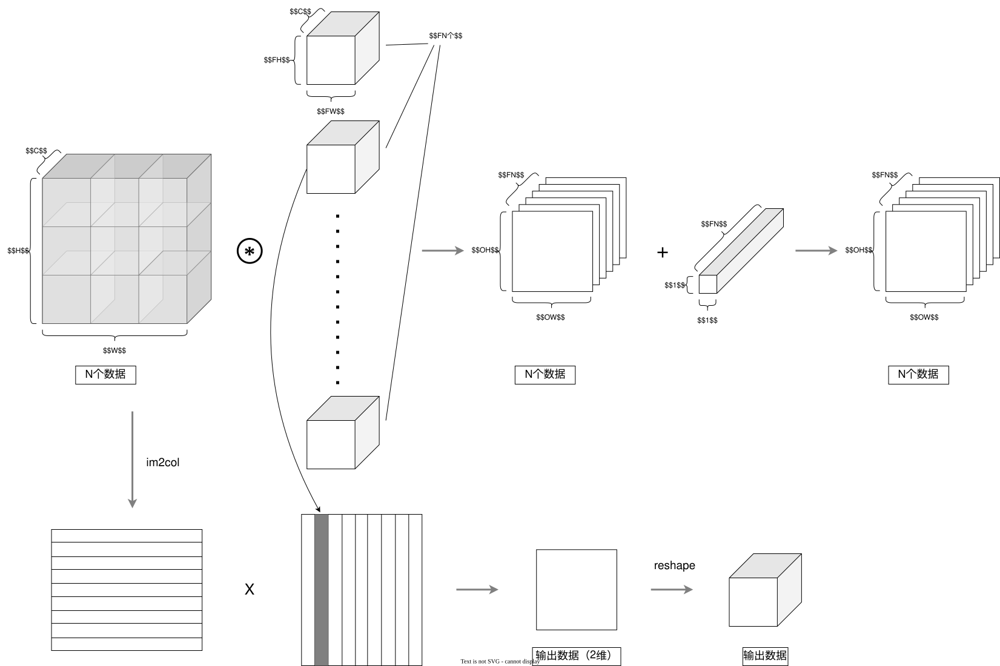
import numpy as np
class Convolution:
def __init__(self, W, b, stride=1, pad=0):
self.W = W
self.b = b
self.stride = stride
self.pad = pad
# 中间数据（backward时使用）
self.x = None
self.col = None
self.col_W = None
# 权重和偏置参数的梯度
self.dW = None
self.db = None
def forward(self, x):
FN, C, FH, FW = self.W.shape
N, C, H, W = x.shape
out_h = int((H + 2 * self.pad - FH) / self.stride + 1)
out_w = int((W + 2 * self.pad - FW) / self.stride + 1)
col = im2col(x, FH, FW, self.stride, self.pad)
col_W = self.W.reshape(FN, -1).T
out = np.dot(col, col_W) + self.b
out = out.reshape(N, out_h, out_w, -1).transpose(0, 3, 1, 2)
self.x = x
self.col = col
self.col_W = col_W
return out
def backward(self, dout):
FN, C, FH, FW = self.W.shape
dout = dout.transpose(0,2,3,1).reshape(-1, FN)
self.db = np.sum(dout, axis=0)
self.dW = np.dot(self.col.T, dout)
self.dW = self.dW.transpose(1, 0).reshape(FN, C, FH, FW)
dcol = np.dot(dout, self.col_W.T)
dx = col2im(dcol, self.x.shape, FH, FW, self.stride, self.pad)
return dx1.1.2 2.2 Relu 层
Rele 层是一个常用的激活函数层，它将输入中的负值置为零，正值保持不变。假设输入的 x 是一个numpy数组，Rele 层的前向传播和反向传播可以实现如下：
class Relu:
def __init__(self):
self.mask = None
def forward(self, x):
self.mask = (x <= 0)
out = x.copy()
out[self.mask] = 0
return out
def backward(self, dout):
dout[self.mask] = 0
dx = dout
return dx由计算图推导可知，如果正向传播时的输入值小于等于0，则反向传播的值为零，否则为正向传播的输入值。
1.1.3 2.3 池化层
1.1.3.1 2.3.1 池化运算
池化是缩小高、长方向上的空间的运算。如图11所示，池化层通过对输入数据进行下采样来减少数据的维度。
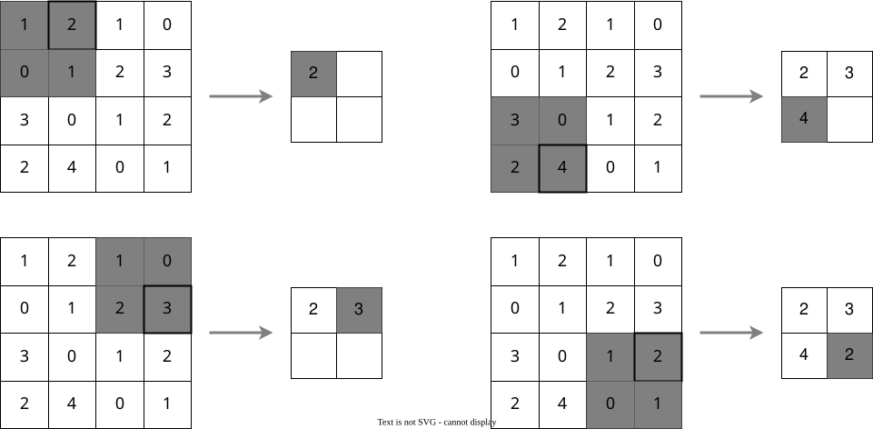
在池化层中，通常会使用最大池化（Max Pooling）或平均池化（Average Pooling）。最大池化是取池化区域内的最大值，而平均池化是取池化区域内的平均值。另外，一般来说，池化层的步长和池化区域的大小相同。
池化层的特征 池化层具有以下特征： 1. 没有要学习的参数：池化层和卷积层不同，池化层没有要学习的参数，他只是从目标区域中取最大值（或者平均值）。 2. 通道数不发生变化：经过池化运算之后，输入数据和输出数据的通道数不会发生变化。 3. 对微小的位置变化具有稳定性：输入位置发生微小偏差时，池化层仍然会返回相同的结果。
1.1.3.2 2.3.2 池化层的实现
池化层与卷积层相同，都使用im2col展开输入数据。不过，池化的情况下，在通道方向上是独立的，这一点和卷积层不同。具体地讲，如图12所示，池化的应用区域按通道单独展开。
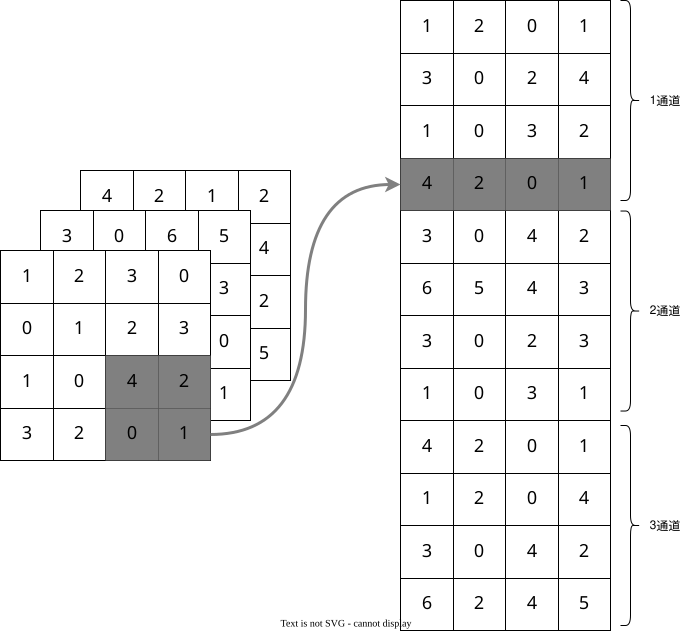
像这样展开之后，只需要对展开的矩阵求个行的最大值，并转换为合适的形状即可。上面就是池化层的 forward 流程。Python的代码实现如下：
class Pooling:
def __init__(self, pool_h, pool_w, stride=1, pad=0):
self.pool_h = pool_h
self.pool_w = pool_w
self.stride = stride
self.pad = pad
self.x = None
self.arg_max = None
def forward(self, x):
N, C, H, W = x.shape
out_h = int(1 + (H - self.pool_h) / self.stride)
out_w = int(1 + (W - self.pool_w) / self.stride)
col = im2col(x, self.pool_h, self.pool_w, self.stride, self.pad)
col = col.reshape(-1, self.pool_h*self.pool_w)
arg_max = np.argmax(col, axis=1)
out = np.max(col, axis=1)
out = out.reshape(N, out_h, out_w, C).transpose(0, 3, 1, 2)
self.x = x
self.arg_max = arg_max
return out
def backward(self, dout):
dout = dout.transpose(0, 2, 3, 1)
pool_size = self.pool_h * self.pool_w
dmax = np.zeros((dout.size, pool_size))
dmax[np.arange(self.arg_max.size), self.arg_max.flatten()] = dout.flatten()
dmax = dmax.reshape(dout.shape + (pool_size,))
dcol = dmax.reshape(dmax.shape[0] * dmax.shape[1] * dmax.shape[2], -1)
dx = col2im(dcol, self.x.shape, self.pool_h, self.pool_w, self.stride, self.pad)
return dx1.1.4 2.4 全连接层
Affine 层是一个全连接层，它将输入的特征图展平并与权重矩阵相乘。我们先给出计算图
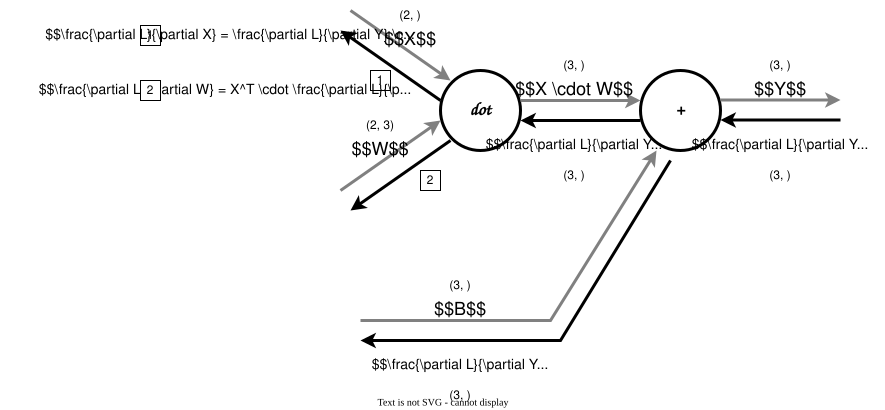
要注意 X 和 \frac{\partial L}{\partial X} 形状相同，W 和 \frac{\partial L}{\partial W} 形状相同，在这个基础上，通过形状保持一致，可以推导出下式 \begin{aligned} \frac{\partial L}{\partial X} &= \frac{\partial L}{\partial Y} \cdot W^{T} \\ \frac{\partial L}{\partial W} &= X^T \cdot \frac{\partial L}{\partial Y} \end{aligned}
class Affine:
def __init__(self, W, b):
self.W =W
self.b = b
self.x = None
self.original_x_shape = None
# 权重和偏置参数的导数
self.dW = None
self.db = None
def forward(self, x):
# 对应张量
self.original_x_shape = x.shape
x = x.reshape(x.shape[0], -1)
self.x = x
out = np.dot(self.x, self.W) + self.b
return out
def backward(self, dout):
dx = np.dot(dout, self.W.T)
self.dW = np.dot(self.x.T, dout)
self.db = np.sum(dout, axis=0)
dx = dx.reshape(*self.original_x_shape) # 还原输入数据的形状（对应张量）
return dx正向传播时，偏执被加到 X \cdot W 的各个数据上，因此，反向传播时，各个数据的反向传播的值需要汇总为偏执的元素。即 \frac{\partial L}{\partial B}=\frac{\partial L}{\partial Y} \text{的第一个轴（第0轴）方向上的和}
1.1.5 2.5 Softmax-with-Loss 层
Softmax 和 Loss 层结合在一起可以使得反向传播的计算更高效，得到“漂亮”的推导公式。
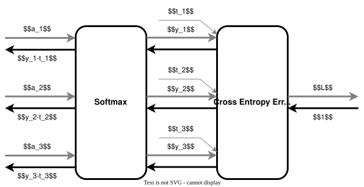
具体推导过程这里不详细展开。
def softmax(x):
exp_x = np.exp(x - np.max(x, axis=1, keepdims=True)) # 防止溢出
return exp_x / np.sum(exp_x, axis=1, keepdims=True)
def cross_entropy_error(y, t):
if y.ndim == 1:
y = y.reshape(1, -1)
if t.ndim == 1:
t = t.reshape(1, -1)
batch_size = y.shape[0]
return -np.sum(np.log(y[np.arange(batch_size), t] + 1e-7)) / batch_size
class SoftmaxWithLoss:
def __init__(self):
self.loss = None
self.y = None # softmax的输出
self.t = None # 监督数据
def forward(self, x, t):
self.t = t
self.y = softmax(x)
self.loss = cross_entropy_error(self.y, self.t)
return self.loss
def backward(self, dout=1):
batch_size = self.t.shape[0]
if self.t.size == self.y.size: # 监督数据是one-hot-vector的情况
dx = (self.y - self.t) / batch_size
else:
dx = self.y.copy()
dx[np.arange(batch_size), self.t] -= 1
dx = dx / batch_size
return dx1.2 3. CNN 的实现
之前已经完成了卷积层、Relu层、池化层和全连接层，接下来组装这些层，搭建手写数字识别的CNN。神经网络的结构如图15所示
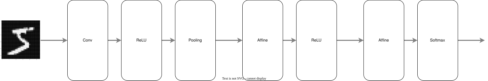
我们将它实现为名为SimpleConvNet的类。
import pickle
from typing import OrderedDict
class SimpleConvNet:
"""简单的ConvNet
conv - relu - pool - affine - relu - affine - softmax
Parameters
----------
input_size : 输入大小（MNIST的情况下为784）
hidden_size_list : 隐藏层的神经元数量的列表（e.g. [100, 100, 100]）
output_size : 输出大小（MNIST的情况下为10）
activation : 'relu' or 'sigmoid'
weight_init_std : 指定权重的标准差（e.g. 0.01）
指定'relu'或'he'的情况下设定“He的初始值”
指定'sigmoid'或'xavier'的情况下设定“Xavier的初始值”
"""
def __init__(self, input_dim=(1, 28, 28),
conv_param={'filter_num':30, 'filter_size':5, 'pad':0, 'stride':1},
hidden_size=100, output_size=10, weight_init_std=0.01):
filter_num = conv_param['filter_num']
filter_size = conv_param['filter_size']
filter_pad = conv_param['pad']
filter_stride = conv_param['stride']
input_size = input_dim[1]
conv_output_size = (input_size - filter_size + 2*filter_pad) / filter_stride + 1
pool_output_size = int(filter_num * (conv_output_size/2) * (conv_output_size/2))
# 初始化权重
self.params = {}
self.params['W1'] = weight_init_std * \
np.random.randn(filter_num, input_dim[0], filter_size, filter_size)
self.params['b1'] = np.zeros(filter_num)
self.params['W2'] = weight_init_std * \
np.random.randn(pool_output_size, hidden_size)
self.params['b2'] = np.zeros(hidden_size)
self.params['W3'] = weight_init_std * \
np.random.randn(hidden_size, output_size)
self.params['b3'] = np.zeros(output_size)
# 生成层
self.layers = OrderedDict()
self.layers['Conv1'] = Convolution(self.params['W1'], self.params['b1'],
conv_param['stride'], conv_param['pad'])
self.layers['Relu1'] = Relu()
self.layers['Pool1'] = Pooling(pool_h=2, pool_w=2, stride=2)
self.layers['Affine1'] = Affine(self.params['W2'], self.params['b2'])
self.layers['Relu2'] = Relu()
self.layers['Affine2'] = Affine(self.params['W3'], self.params['b3'])
self.last_layer = SoftmaxWithLoss()
def predict(self, x):
for layer in self.layers.values():
x = layer.forward(x)
return x
def loss(self, x, t):
"""求损失函数
参数x是输入数据、t是教师标签
"""
y = self.predict(x)
return self.last_layer.forward(y, t)
def accuracy(self, x, t, batch_size=100):
if t.ndim != 1 : t = np.argmax(t, axis=1)
acc = 0.0
for i in range(int(x.shape[0] / batch_size)):
tx = x[i*batch_size:(i+1)*batch_size]
tt = t[i*batch_size:(i+1)*batch_size]
y = self.predict(tx)
y = np.argmax(y, axis=1)
acc += np.sum(y == tt)
return acc / x.shape[0]
def gradient(self, x, t):
"""求梯度（误差反向传播法）
Parameters
----------
x : 输入数据
t : 教师标签
Returns
-------
具有各层的梯度的字典变量
grads['W1']、grads['W2']、...是各层的权重
grads['b1']、grads['b2']、...是各层的偏置
"""
# forward
self.loss(x, t)
# backward
dout = 1
dout = self.last_layer.backward(dout)
layers = list(self.layers.values())
layers.reverse()
for layer in layers:
dout = layer.backward(dout)
# 设定
grads = {}
grads['W1'], grads['b1'] = self.layers['Conv1'].dW, self.layers['Conv1'].db
grads['W2'], grads['b2'] = self.layers['Affine1'].dW, self.layers['Affine1'].db
grads['W3'], grads['b3'] = self.layers['Affine2'].dW, self.layers['Affine2'].db
return grads
def save_params(self, file_name="params.pkl"):
params = {}
for key, val in self.params.items():
params[key] = val
with open(file_name, 'wb') as f:
pickle.dump(params, f)
def load_params(self, file_name="params.pkl"):
with open(file_name, 'rb') as f:
params = pickle.load(f)
for key, val in params.items():
self.params[key] = val
for i, key in enumerate(['Conv1', 'Affine1', 'Affine2']):
self.layers[key].W = self.params['W' + str(i+1)]
self.layers[key].b = self.params['b' + str(i+1)]1.3 开始训练
训练过程的代码基本相同，可以将训练流程整合成一个类，方便调用。
先定义优化算法
class Adam:
"""Adam (http://arxiv.org/abs/1412.6980v8)"""
def __init__(self, lr=0.001, beta1=0.9, beta2=0.999):
self.lr = lr
self.beta1 = beta1
self.beta2 = beta2
self.iter = 0
self.m = None
self.v = None
def update(self, params, grads):
if self.m is None:
self.m, self.v = {}, {}
for key, val in params.items():
self.m[key] = np.zeros_like(val)
self.v[key] = np.zeros_like(val)
self.iter += 1
lr_t = self.lr * np.sqrt(1.0 - self.beta2**self.iter) / (1.0 - self.beta1**self.iter)
for key in params.keys():
#self.m[key] = self.beta1*self.m[key] + (1-self.beta1)*grads[key]
#self.v[key] = self.beta2*self.v[key] + (1-self.beta2)*(grads[key]**2)
self.m[key] += (1 - self.beta1) * (grads[key] - self.m[key])
self.v[key] += (1 - self.beta2) * (grads[key]**2 - self.v[key])
params[key] -= lr_t * self.m[key] / (np.sqrt(self.v[key]) + 1e-7)
#unbias_m += (1 - self.beta1) * (grads[key] - self.m[key]) # correct bias
#unbisa_b += (1 - self.beta2) * (grads[key]*grads[key] - self.v[key]) # correct bias
#params[key] += self.lr * unbias_m / (np.sqrt(unbisa_b) + 1e-7)定义训练器
class Trainer:
"""进行神经网络的训练的类
"""
def __init__(self, network, x_train, t_train, x_test, t_test,
epochs=20, mini_batch_size=100,
optimizer='SGD', optimizer_param={'lr':0.01},
evaluate_sample_num_per_epoch=None, verbose=True):
self.network = network
self.verbose = verbose
self.x_train = x_train
self.t_train = t_train
self.x_test = x_test
self.t_test = t_test
self.epochs = epochs
self.batch_size = mini_batch_size
self.evaluate_sample_num_per_epoch = evaluate_sample_num_per_epoch
# optimzer
optimizer_class_dict = {'adam':Adam}
self.optimizer = optimizer_class_dict[optimizer.lower()](**optimizer_param)
self.train_size = x_train.shape[0]
self.iter_per_epoch = max(self.train_size / mini_batch_size, 1)
self.max_iter = int(epochs * self.iter_per_epoch)
self.current_iter = 0
self.current_epoch = 0
self.train_loss_list = []
self.train_acc_list = []
self.test_acc_list = []
def train_step(self):
batch_mask = np.random.choice(self.train_size, self.batch_size)
x_batch = self.x_train[batch_mask]
t_batch = self.t_train[batch_mask]
grads = self.network.gradient(x_batch, t_batch)
self.optimizer.update(self.network.params, grads)
loss = self.network.loss(x_batch, t_batch)
self.train_loss_list.append(loss)
if self.verbose: print("train loss:" + str(loss))
if self.current_iter % self.iter_per_epoch == 0:
self.current_epoch += 1
x_train_sample, t_train_sample = self.x_train, self.t_train
x_test_sample, t_test_sample = self.x_test, self.t_test
if not self.evaluate_sample_num_per_epoch is None:
t = self.evaluate_sample_num_per_epoch
x_train_sample, t_train_sample = self.x_train[:t], self.t_train[:t]
x_test_sample, t_test_sample = self.x_test[:t], self.t_test[:t]
train_acc = self.network.accuracy(x_train_sample, t_train_sample)
test_acc = self.network.accuracy(x_test_sample, t_test_sample)
self.train_acc_list.append(train_acc)
self.test_acc_list.append(test_acc)
if self.verbose: print("=== epoch:" + str(self.current_epoch) + ", train acc:" + str(train_acc) + ", test acc:" + str(test_acc) + " ===")
self.current_iter += 1
def train(self):
for i in range(self.max_iter):
self.train_step()
test_acc = self.network.accuracy(self.x_test, self.t_test)
if self.verbose:
print("=============== Final Test Accuracy ===============")
print("test acc:" + str(test_acc))开始训练
%matplotlib inline
%config InlineBackend.figure_format = 'svg' # 在 Jupyter 中设置矢量图显示
import matplotlib.pyplot as plt
# 读入数据
(x_train, t_train), (x_test, t_test) = load_mnist(flatten=False)
# 处理花费时间较长的情况下减少数据
x_train, t_train = x_train[:5000], t_train[:5000]
x_test, t_test = x_test[:1000], t_test[:1000]
max_epochs = 10
network = SimpleConvNet(input_dim=(1,28,28),
conv_param = {'filter_num': 30, 'filter_size': 5, 'pad': 0, 'stride': 1},
hidden_size=100, output_size=10, weight_init_std=0.01)
trainer = Trainer(network, x_train, t_train, x_test, t_test,
epochs=max_epochs, mini_batch_size=100,
optimizer='Adam', optimizer_param={'lr': 0.001},
evaluate_sample_num_per_epoch=1000)
trainer.train()
# 保存参数
network.save_params("params.pkl")
print("Saved Network Parameters!")
# 绘制图形
markers = {'train': 'o', 'test': 's'}
x = np.arange(max_epochs)
plt.plot(x, trainer.train_acc_list, marker='o', label='train', markevery=2)
plt.plot(x, trainer.test_acc_list, marker='s', label='test', markevery=2)
plt.xlabel("epochs")
plt.ylabel("accuracy")
plt.ylim(0, 1.0)
plt.legend(loc='lower right')
plt.show()train loss:2.2993233123992303
=== epoch:1, train acc:0.17, test acc:0.137 ===
train loss:2.298051406536639
train loss:2.2945294701313257
train loss:2.284771892908237
train loss:2.2813310874551878
train loss:2.268831232980478
train loss:2.2628597700740487
train loss:2.239410142316585
train loss:2.1985486261954863
train loss:2.1750198496213557
train loss:2.15653442726547
train loss:2.0824741793082246
train loss:2.1075284608494194
train loss:2.065785280218253
train loss:1.984113015367737
train loss:1.894449865022823
train loss:1.8615112124207978
train loss:1.7586016085072345
train loss:1.7047854843516674
train loss:1.6243844836022132
train loss:1.4887606583687378
train loss:1.4327460718910328
train loss:1.3693697749666776
train loss:1.3252180554028021
train loss:1.3117446175404408
train loss:1.1798776447107677
train loss:1.1303709888765032
train loss:0.9359889084052492
train loss:0.9051652504476809
train loss:0.8979297546746381
train loss:0.9117984230653157
train loss:0.8530731425813319
train loss:0.780247888824317
train loss:0.9073236114474619
train loss:0.7389102754075944
train loss:0.7189497130841355
train loss:0.7157263818575741
train loss:0.7292861203000419
train loss:0.766503668958341
train loss:0.6706282224329541
train loss:0.6543866337386546
train loss:0.7650083469754317
train loss:0.5442374164026306
train loss:0.646690736029863
train loss:0.6467109494065865
train loss:0.6116186590905458
train loss:0.4833288020683271
train loss:0.5722184615013947
train loss:0.6956719569947615
train loss:0.6271061001053563
train loss:0.43934530442750125
=== epoch:2, train acc:0.803, test acc:0.803 ===
train loss:0.5421429319992981
train loss:0.582686900605537
train loss:0.45024696882358983
train loss:0.6120433921594749
train loss:0.3749594145828933
train loss:0.38680031763626077
train loss:0.6884769535234266
train loss:0.45992452353640034
train loss:0.5650642993275807
train loss:0.5109198054441245
train loss:0.6860739541785279
train loss:0.3778274876336246
train loss:0.5285210714568114
train loss:0.3501839821526599
train loss:0.32331314804158373
train loss:0.35703240228812
train loss:0.6350809942913812
train loss:0.3584903100263206
train loss:0.6128995685016033
train loss:0.4014245088678085
train loss:0.3281589531418003
train loss:0.40147568943378126
train loss:0.45572751174817433
train loss:0.38588405960698957
train loss:0.5381755564490429
train loss:0.3062609046626077
train loss:0.43275030397856606
train loss:0.42674468518630043
train loss:0.28165333135782145
train loss:0.49863793404886986
train loss:0.35205199921800767
train loss:0.4420429053527152
train loss:0.3802967352895483
train loss:0.4803640767358186
train loss:0.36659542676568
train loss:0.47032921909109343
train loss:0.3307465923477735
train loss:0.33396976712487436
train loss:0.3178618459717112
train loss:0.4445770332902869
train loss:0.3325074438211958
train loss:0.40464424715984043
train loss:0.28256899936366464
train loss:0.23653125160850533
train loss:0.31384526803768176
train loss:0.3054796082934627
train loss:0.33067022042060024
train loss:0.35221709841741655
train loss:0.23619015590257206
train loss:0.36630505077690223
=== epoch:3, train acc:0.878, test acc:0.862 ===
train loss:0.3072890038034444
train loss:0.2853209731935703
train loss:0.3703181268741409
train loss:0.2123961963353763
train loss:0.3254400876887978
train loss:0.321501988922644
train loss:0.5279413079927824
train loss:0.2985339802962787
train loss:0.4360762971736847
train loss:0.3588755040460769
train loss:0.4534475879377149
train loss:0.40527847138469153
train loss:0.6293684866887118
train loss:0.4158934643989957
train loss:0.3743323032457031
train loss:0.496219701654936
train loss:0.2318289630905251
train loss:0.3362051622149648
train loss:0.4080910533211538
train loss:0.22016640663315237
train loss:0.23424007155498455
train loss:0.3014143607483944
train loss:0.2082626196807389
train loss:0.3013353363115434
train loss:0.23574740106905284
train loss:0.22955880812998075
train loss:0.2931440277270484
train loss:0.18271582566592798
train loss:0.38751714154974337
train loss:0.31764203210982567
train loss:0.4300720145336178
train loss:0.45346747273295035
train loss:0.208538340215911
train loss:0.2853038396450145
train loss:0.2952243954227819
train loss:0.2731152930780338
train loss:0.2560474970992363
train loss:0.31081360491135424
train loss:0.273919724957917
train loss:0.26872888074672074
train loss:0.42981754014182477
train loss:0.413039644101713
train loss:0.30936930122179157
train loss:0.21586798707213553
train loss:0.22594321711492835
train loss:0.35871108772261495
train loss:0.2768928101682123
train loss:0.2021024501051464
train loss:0.2529573532174624
train loss:0.23322795821678144
=== epoch:4, train acc:0.904, test acc:0.88 ===
train loss:0.22616469648771007
train loss:0.34839171844006045
train loss:0.1975000800740565
train loss:0.27279018406512984
train loss:0.3509874927367534
train loss:0.3067757485064357
train loss:0.22879796254143225
train loss:0.2582004777251723
train loss:0.14823795264719147
train loss:0.4179973429909448
train loss:0.14325745233863815
train loss:0.32246303393695414
train loss:0.45054615214914895
train loss:0.26835955073963347
train loss:0.28898638668839105
train loss:0.18069689934929392
train loss:0.24775119760240952
train loss:0.2170127446392193
train loss:0.28658135064882356
train loss:0.2997839470126872
train loss:0.4154721061116146
train loss:0.4251289604334492
train loss:0.28505077745729196
train loss:0.22438111351531376
train loss:0.337390437208918
train loss:0.3193087047414781
train loss:0.36840096185841714
train loss:0.205377323428433
train loss:0.29454423849842576
train loss:0.2629834436357297
train loss:0.12685582131328915
train loss:0.2162671370728722
train loss:0.19228099952640001
train loss:0.20380678974817915
train loss:0.28844269408834217
train loss:0.2475997011441411
train loss:0.24744972999412654
train loss:0.381930535614523
train loss:0.19383532175731258
train loss:0.2804024205394989
train loss:0.2722849239632914
train loss:0.20530187277299106
train loss:0.29064740951410845
train loss:0.12818765886626074
train loss:0.20360216401253284
train loss:0.206162221352942
train loss:0.2656653976035492
train loss:0.3491278497621291
train loss:0.2643267889703639
train loss:0.3406122315581756
=== epoch:5, train acc:0.916, test acc:0.898 ===
train loss:0.31766150658602843
train loss:0.37351126101602944
train loss:0.1709833444680261
train loss:0.23023852414050855
train loss:0.19409047460326181
train loss:0.14908257103595512
train loss:0.2248214057207151
train loss:0.2102999243506283
train loss:0.27172858177309633
train loss:0.1829277264186582
train loss:0.2470894247028754
train loss:0.1645611781878024
train loss:0.17449436188242548
train loss:0.2808642714000858
train loss:0.38919806493401177
train loss:0.19751238945155072
train loss:0.3808005539436744
train loss:0.2495673177310557
train loss:0.1778498250758175
train loss:0.2847944115132006
train loss:0.181628419429369
train loss:0.15571496002859989
train loss:0.23436715770745475
train loss:0.2180833900474568
train loss:0.1512352161585383
train loss:0.14292545334542675
train loss:0.2779439662424268
train loss:0.13740219611860596
train loss:0.09484123502523634
train loss:0.15202435463411343
train loss:0.28203379000023177
train loss:0.14511135756753385
train loss:0.17325132002391397
train loss:0.11846050244523697
train loss:0.1470747703048898
train loss:0.08825684575203839
train loss:0.3170887520975665
train loss:0.1259306726497246
train loss:0.19946761834162222
train loss:0.2339113779790302
train loss:0.10920019662614296
train loss:0.24542847815428936
train loss:0.2328707659949758
train loss:0.180854926249885
train loss:0.13071361077202823
train loss:0.23137246930881908
train loss:0.34150471780435027
train loss:0.15472086861378423
train loss:0.17249920933054055
train loss:0.20158349447305607
=== epoch:6, train acc:0.923, test acc:0.912 ===
train loss:0.17435920609421707
train loss:0.18632293569519645
train loss:0.17258938729404327
train loss:0.1724852822479695
train loss:0.2806279299554692
train loss:0.1867959958444672
train loss:0.22015871724376898
train loss:0.264372443418892
train loss:0.2535511858639634
train loss:0.13457128288056716
train loss:0.19554476373600166
train loss:0.1262267381322478
train loss:0.13513189636859718
train loss:0.19233721611363708
train loss:0.11380528056261577
train loss:0.22213367394915554
train loss:0.23388511602132497
train loss:0.15462343155280492
train loss:0.15194866528434928
train loss:0.13172996245005977
train loss:0.0694920087382748
train loss:0.2846361526726141
train loss:0.16400299674770583
train loss:0.13552997347894097
train loss:0.14351470469645608
train loss:0.1070492457614424
train loss:0.15550975275609166
train loss:0.1247714148429201
train loss:0.07201382686184972
train loss:0.20373589189970592
train loss:0.11002856894029095
train loss:0.1913882069638971
train loss:0.18797965677306563
train loss:0.1447309967711009
train loss:0.18000080500352353
train loss:0.18719179080817816
train loss:0.1301316379985612
train loss:0.19402099816880314
train loss:0.4656969275725995
train loss:0.10598173149568828
train loss:0.17724791838775045
train loss:0.3144020903335516
train loss:0.3151548076376727
train loss:0.14587767986770456
train loss:0.09142687496523445
train loss:0.24123284512106644
train loss:0.18252856765558265
train loss:0.0964489717612485
train loss:0.1638347418376568
train loss:0.07355423731395003
=== epoch:7, train acc:0.941, test acc:0.921 ===
train loss:0.39114512781684047
train loss:0.18574068385967224
train loss:0.2396832734222846
train loss:0.15269440813184607
train loss:0.10162733711729732
train loss:0.20282812452440013
train loss:0.18116312701905038
train loss:0.11051300335064809
train loss:0.12764428606291514
train loss:0.1132083814422157
train loss:0.3516635450767648
train loss:0.11703618681180787
train loss:0.16618229400417792
train loss:0.1757049204090141
train loss:0.22434198369842348
train loss:0.25969912036467524
train loss:0.18645060581950562
train loss:0.15168046998950058
train loss:0.16818246713076895
train loss:0.16775176543840187
train loss:0.13985643215185922
train loss:0.17957712601141004
train loss:0.14794512281764913
train loss:0.18596735724615285
train loss:0.09696984728316345
train loss:0.10056501343534231
train loss:0.17007655787032186
train loss:0.16455267583074348
train loss:0.11147819016781113
train loss:0.2040638687207783
train loss:0.16474307005251654
train loss:0.1035005122990595
train loss:0.1851032087761237
train loss:0.14722688970549971
train loss:0.08784782082714225
train loss:0.19316117446101116
train loss:0.22151138444101234
train loss:0.12699564637189584
train loss:0.09543943217928573
train loss:0.0781842472849177
train loss:0.09795676890819195
train loss:0.17138394990359937
train loss:0.11858770904076982
train loss:0.1343873533514615
train loss:0.05350931136996054
train loss:0.08627816537722419
train loss:0.13835655250901913
train loss:0.1571237843152624
train loss:0.14849050995646274
train loss:0.19339022611221643
=== epoch:8, train acc:0.951, test acc:0.925 ===
train loss:0.15664234277634803
train loss:0.21256919017477693
train loss:0.12575834120091497
train loss:0.08454367853131481
train loss:0.1727655218699136
train loss:0.22147749740763253
train loss:0.1473078205066079
train loss:0.17938776935642203
train loss:0.09225384313131846
train loss:0.1484435660355912
train loss:0.13234510435931854
train loss:0.2107198696462416
train loss:0.20301685796484187
train loss:0.07434816974237814
train loss:0.07119837111955211
train loss:0.07608640310821208
train loss:0.06321964230637196
train loss:0.10035088370831298
train loss:0.09591066175208507
train loss:0.21617298634658144
train loss:0.16063150002068305
train loss:0.2446804441771928
train loss:0.1290432439534047
train loss:0.05756418820418771
train loss:0.09673280233655786
train loss:0.08198184116130024
train loss:0.11375172045177394
train loss:0.03883274914017018
train loss:0.0898578031670973
train loss:0.1122280102069019
train loss:0.1974533839001029
train loss:0.08849850481732688
train loss:0.07316267295202271
train loss:0.11794255871191699
train loss:0.19163570491244747
train loss:0.16761280006604903
train loss:0.10018750980068986
train loss:0.11292496897587806
train loss:0.06892827503419169
train loss:0.18066910501266456
train loss:0.17181639792118925
train loss:0.12060354132836176
train loss:0.0902395972955375
train loss:0.17228845996699313
train loss:0.11945636386621813
train loss:0.1482838659167559
train loss:0.14587583714858426
train loss:0.09681083569505139
train loss:0.10244110637416613
train loss:0.08908512172528366
=== epoch:9, train acc:0.96, test acc:0.933 ===
train loss:0.142987803733278
train loss:0.11132195423062446
train loss:0.1243505073764494
train loss:0.08027212253102857
train loss:0.0946247098069664
train loss:0.11244017788194599
train loss:0.06693613826040566
train loss:0.06758029943909437
train loss:0.1884785031541919
train loss:0.13701172043706167
train loss:0.08933681752550945
train loss:0.07810736291520869
train loss:0.1597015493587758
train loss:0.08788118154954389
train loss:0.14257294738930837
train loss:0.08501881768380581
train loss:0.3132723287350194
train loss:0.07877595013040031
train loss:0.0707589597476979
train loss:0.07460552341250606
train loss:0.16802309469440502
train loss:0.15825731800532813
train loss:0.1561584618397619
train loss:0.06572817748826072
train loss:0.19788679037450493
train loss:0.09852378089783935
train loss:0.14481946128989423
train loss:0.2329081464361625
train loss:0.12729983881552268
train loss:0.040921052814578876
train loss:0.07957195423520375
train loss:0.11030109936058732
train loss:0.09684464574160273
train loss:0.12545259205706658
train loss:0.14520475781742506
train loss:0.06317704780321531
train loss:0.1743682097070703
train loss:0.143060153292166
train loss:0.11999992811689608
train loss:0.09136156622223815
train loss:0.1259137920571532
train loss:0.13438645946177005
train loss:0.15626491943001303
train loss:0.10230937434055139
train loss:0.1556476989997181
train loss:0.10356615704254148
train loss:0.06427580496329573
train loss:0.2149584669259314
train loss:0.07863513117089126
train loss:0.10904331209756694
=== epoch:10, train acc:0.962, test acc:0.936 ===
train loss:0.053365268483054826
train loss:0.15200942246809743
train loss:0.07827332546869138
train loss:0.06211754336044036
train loss:0.10086281365408058
train loss:0.068890545684123
train loss:0.08571469463156395
train loss:0.09540060562532279
train loss:0.11630338782143207
train loss:0.06781551227622794
train loss:0.09391967894036721
train loss:0.11581863106229323
train loss:0.06361719016646822
train loss:0.048513896188000706
train loss:0.08693286601224794
train loss:0.10254690986351492
train loss:0.1495879234755672
train loss:0.09514331509645857
train loss:0.14623002882991462
train loss:0.15264355057640633
train loss:0.1541105846973888
train loss:0.10054687944434575
train loss:0.1384551681582971
train loss:0.07893763574116966
train loss:0.10782519637791436
train loss:0.07597328239312273
train loss:0.10321659889496787
train loss:0.06616808162538752
train loss:0.05276566786720314
train loss:0.08153214151772498
train loss:0.1253288595659553
train loss:0.10294032495761049
train loss:0.0779923394671156
train loss:0.13616983189923487
train loss:0.14092797935091772
train loss:0.08683949175141059
train loss:0.0335050814454191
train loss:0.11299400587694938
train loss:0.03685198792302141
train loss:0.13471500298634312
train loss:0.030420203822731886
train loss:0.13752815373386762
train loss:0.2401609972854293
train loss:0.052532075336710164
train loss:0.07563932862944332
train loss:0.10086296121517722
train loss:0.0695921429197045
train loss:0.0375726520439078
train loss:0.09758703294661211
=============== Final Test Accuracy ===============
test acc:0.938
Saved Network Parameters!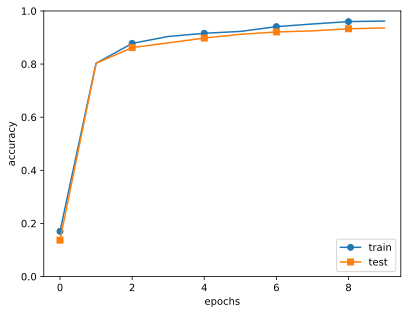
可视化权重变化
def filter_show(filters, nx=8, margin=3, scale=10):
"""
c.f. https://gist.github.com/aidiary/07d530d5e08011832b12#file-draw_weight-py
"""
FN, C, FH, FW = filters.shape
ny = int(np.ceil(FN / nx))
fig = plt.figure()
fig.subplots_adjust(left=0, right=1, bottom=0, top=1, hspace=0.05, wspace=0.05)
for i in range(FN):
ax = fig.add_subplot(ny, nx, i+1, xticks=[], yticks=[])
ax.imshow(filters[i, 0], cmap=plt.cm.gray_r, interpolation='nearest')
plt.show()
network = SimpleConvNet()
# 随机进行初始化后的权重
filter_show(network.params['W1'])
# 学习后的权重
network.load_params("params.pkl")
filter_show(network.params['W1'])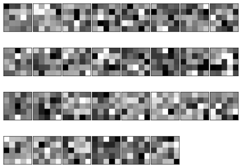
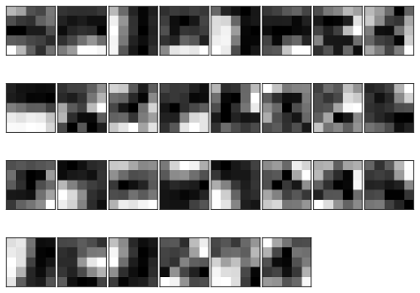